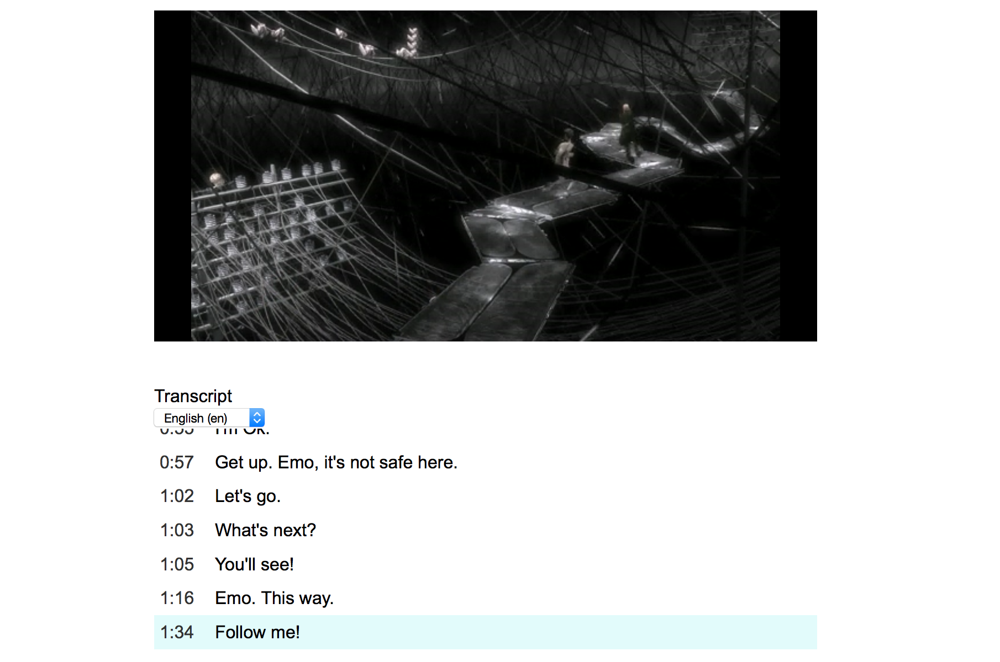

Video.js Transcript
A plugin for video.js that creates an interactive transcript from captions or subtitles that synchronizes with the player.
Here are some cool things I've made.
A plugin for video.js that creates an interactive transcript from captions or subtitles that synchronizes with the player.
A web-based drawing toy for creating little animations super quickly and saving them as gifs. Inspired by the cheap portable LCD toys of the 80s and 90s like Tamagotchi.
A roguelike game about retrieving a stolen jewel from lobsterfolk in an underwater fortress. Made for the 2015 7DRL Challenge.
An HTML5 arcade game about stealing treasure chests from octopuses.
A Javascript library and jQuery plugin for generating little randomized ASCII art robots.
An HTML5 game where you are a dragon and you need to finish your tax return quickly. Created in 72 hours for Ludum Dare 33 for the theme "You are the Monster".